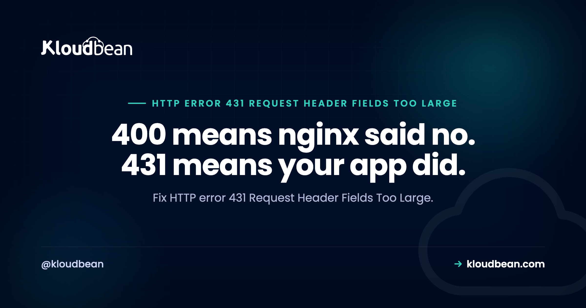

HTTP Error 431 Request Header Fields Too Large: The Status Code Names the Culprit

431 is one of the few HTTP status codes that tells you precisely what is wrong: the headers you sent were too big. No ambiguity, no layers of interpretation. What makes it interesting rather than trivial is that the code you receive depends on which component ran out of patience, and that turns out to be genuinely useful information. nginx rejects oversized headers with a 400. Node returns 431. Jetty returns a very specific message you can search for verbatim. So before changing any limits, read which one you got, because it tells you where the ceiling actually is.
Measure your request headers first, since the cause is nearly always accumulated cookies or an oversized JWT. Then raise the limit at whichever layer rejected you: large_client_header_buffers in nginx, --max-http-header-size for Node, requestHeaderSize for Jetty. Raise it only far enough to unblock people, then reduce what you are sending, because a limit raised to accommodate uncontrolled growth just moves the wall further out. Moving session data into Redis and trimming JWT claims are the real fixes.
Read the status code, it identifies the layer
| What you see | Who rejected it | Setting | Common default |
|---|---|---|---|
400 Bad Request | nginx | large_client_header_buffers | 4 buffers of 8k |
431 Request Header Fields Too Large | Node.js | --max-http-header-size | 16 KB |
Bad message 431 reason: Request Header Fields Too Large | Jetty | requestHeaderSize | 8 KB |
413 or 414 | Usually the request line or body, not headers | Different limits |
That third row is worth calling out because the wording is unusual enough to be diagnostic on its own. If you are seeing Bad message 431 reason: Request Header Fields Too Large, that phrasing comes from Jetty, so you are looking at a Java application server and requestHeaderSize is the setting to change. Knowing that from the error text alone saves a lot of searching in the wrong stack.
The practical consequence of the whole table: in a typical deployment you have at least two limits in series, and the smallest one decides. nginx in front of a Node app means nginx's 8k buffers usually fire before Node's 16 KB does, so you get a 400 and never see a 431. Raise nginx and suddenly the same requests start returning 431 from Node instead. That is progress rather than a new bug, and it surprises people who assumed they had fixed it.
Measure before you change anything
Find out how large the headers actually are, because the number tells you whether this is mild accumulation or something badly wrong:
# Total size of the request headers curl sends
curl -sv https://example.com 2>&1 | awk '/^> /{n += length($0)} END {print n " bytes of request headers"}'
# Reproduce a failure deliberately with a large cookie
curl -sI -H "Cookie: bloat=$(head -c 9000 /dev/zero | tr '\0' 'a')" https://example.comIn a browser, open DevTools, the Network panel, pick the failing request, and read the request headers. Sum the Cookie header and any Authorization header, since together those are almost always the bulk of it.
Rough interpretation. Under 2 KB is normal. Between 4 and 8 KB means you will start hitting default limits. Above 8 KB something is genuinely wrong and raising limits is treating a symptom. I have seen Cookie headers over 12 KB on marketing sites, entirely from tools nobody remembered enabling.
Cause one: cookies accumulate
The dominant cause, and it produces a symptom that misleads everybody: the site works perfectly for new visitors and in private windows, and fails for people who have been using it for months. Especially logged-in people.
The mechanism is simple once stated. Cookies are sent with every single request to your domain, and they only ever get added. A session cookie, an authentication token, a consent record, two or three analytics identifiers, a feature-flag cookie, a marketing platform storing a small object, an A/B test assignment. Each one was a reasonable decision. Nobody ever audits the total.
So the users most invested in your product carry the biggest headers and are the first to be locked out, which is a bad property for a failure mode to have. Then a support conversation happens where the site works fine for whoever is testing it, because they are in a fresh browser.
# Which cookies are set, and how large is each?
curl -sI https://example.com | grep -i '^set-cookie' | awk '{print length($0), $0}' | sort -rnThe fixes, in the order I would apply them:
Move data into server-side sessions. A cookie should carry an identifier, not a payload. If your cookie contains user preferences, cart contents, or anything resembling a serialised object, that belongs in a session store keyed by a short identifier. Redis is the standard answer, and it also fixes the shared-session problem if you ever run more than one application server.
Audit third-party scripts. Tag managers, chat widgets, analytics, and ad platforms all set cookies on your domain. Removing tools nobody looks at any more is usually the single biggest reduction available, and it is free.
Scope cookies narrowly. A cookie set on the apex domain is sent to every subdomain, so an admin-only cookie travels with every request for a static asset on your CDN subdomain. Setting an explicit path and domain keeps it out of requests that never need it.
Set an expiry. Cookies without one, or with a very distant one, are what makes long-term users the worst affected. If a value is only relevant for a session, say so.
Cause two: the JWT that grew
Worth its own section because it is the fastest-growing version of this problem and the fix is a genuine design improvement rather than a workaround.
JWTs are attractive because they are self-contained: the token carries the claims, so the server does not need to look anything up. That property is exactly what makes them grow. Somebody adds roles. Then permissions, as an array. Then tenant memberships. Then feature flags. Each addition saves a database query and adds bytes to every request the user makes for the lifetime of the token.
Decode one and look at what you are actually carrying:
# Size of the token
echo -n "$TOKEN" | wc -c
# What is inside it (payload only, signature not verified)
echo "$TOKEN" | cut -d. -f2 | base64 -d 2>/dev/null | python3 -m json.toolTo be clear about that second command: it reads the claims without verifying the signature, which is fine for inspecting size and content and is not a security check.
A token past about 4 KB is a design problem. The fix is to stop treating the token as a database: put a stable user identifier and the minimum needed for authorisation decisions in the token, and look the rest up server-side, cached in Redis so the lookup costs almost nothing.
// Instead of embedding a full permission set in the token
{ "sub": "user_8f14e45", "role": "admin", "exp": 1785312000 }
// Then resolve the details once per request, from cache
const perms = await redis.get(`perms:${claims.sub}`)
?? await loadAndCachePermissions(claims.sub);There is a real trade here and it is worth naming rather than glossing over. Self-contained tokens genuinely avoid a lookup, and that is their point. Once the token is large enough to break requests, though, you are paying its size on every request from every user to save a cached read that would take under a millisecond. That is a bad exchange, and revocation gets easier as a side effect, since a server-side lookup can refuse a session that a signed token would happily keep honouring.
Raising the limits, properly
You will usually need to do this to unblock affected users while you fix the cause. Raise it at the layer that rejected you, and raise every layer that will now see the request.
nginx. Inside the http block:
client_header_buffer_size 4k;
large_client_header_buffers 4 16k;sudo nginx -t && sudo systemctl reload nginxNode.js. A process flag, in bytes:
# 32 KB
node --max-http-header-size=32768 server.js
# Or via the environment, which is easier under a process manager
NODE_OPTIONS="--max-http-header-size=32768" node server.jsJetty. On the HTTP configuration:
HttpConfiguration config = new HttpConfiguration();
config.setRequestHeaderSize(32768);Two cautions on all of this. These buffers are allocated per connection, so a very large value multiplied by your concurrency is real memory, and setting 1 MB because it definitely works is how you turn a header problem into a memory problem. And a raised limit removes your only signal that something is quietly filling your cookies, so raise it to a sane ceiling like 16 or 32 KB rather than to whatever makes the number go away.
Cause three: everything else, briefly
Many custom headers. Tracing and observability tooling adds them, and a request passing through several services can accumulate a surprising number. Check what your service mesh or gateway is appending.
A very long Referer. Deep URLs with long query strings arrive as a header on the next request. Occasionally the cause on its own, more often the thing that pushes an already-large set over the edge.
A long request line. Strictly a different limit, and it fails similarly. If you are putting a large amount of data in a query string, move it into a POST body, which is what bodies are for.
Redirect chains carrying state. Each hop can add or extend parameters, so a request that started reasonable arrives oversized. Another argument for keeping chains to one hop, covered in 302 vs 301.
| Symptom | Cause | First step |
|---|---|---|
| Works in a private window | Accumulated cookies | Measure the Cookie header |
| Only logged-in users affected | Session or auth cookie growth | Move data to server-side sessions |
| Only users with many permissions | JWT claim bloat | Decode the token, check its size |
| 400 from nginx, not 431 | nginx buffers fire first | Raise nginx, expect Node next |
Bad message 431 reason: | Jetty | requestHeaderSize |
| Appeared after adding a marketing tool | Third-party cookies | Audit Set-Cookie responses |
| Only on requests to one subdomain | Apex-scoped cookies travelling everywhere | Scope cookie domain and path |
What to tell affected users
Clearing cookies for your domain fixes it immediately for that person, which is worth saying in a support reply because it unblocks them in seconds. It is a workaround rather than a fix, and if you find yourself sending it more than occasionally, the header size is the thing to change rather than the users.
Where hosting fits
Two halves, and it is worth separating them honestly.
The limits are configuration. On Kloudbean, nginx comes configured for real applications rather than left at defaults, which is where the 8k buffer ceiling catches people out. That covers the front half of the chain.
The cause is usually application design, and the specific fix is somewhere to keep session data that is not a cookie. Managed Redis sits in the same dashboard as the application, in the same account, which is the practical answer to both cookie payloads and JWT bloat, since both are solved by storing state server-side and looking it up cheaply.
What no platform can do is decide which of your cookies matter or trim your token claims. That is a design decision, and the honest version is that 431 is usually a prompt to make it rather than a limit to raise.

Related reading
The same root cause with a different status code, 400 Bad Request, and its proxy-side version, Cloudflare error 520, where oversized response headers cause the mirror-image problem. For session storage, managed Redis hosting and caching patterns. On tokens and credentials, 401 Unauthorized and environment variables done right. For the proxy layer, the nginx reverse proxy guide. And on redirect chains, 302 vs 301.
Somewhere to put state that is not a cookie.
Managed Redis in the same account and dashboard as your application, with nginx configured for real workloads rather than defaults, from $8/mo. Free migration assistance included. Start at kloudbean.com.
Managed Redis · Managed nginx · Automatic backups · Flat from $8/mo
FAQ
What does HTTP error 431 mean?
It means the request headers you sent exceeded what the server will accept. It is one of the clearest status codes in HTTP, since the cause is stated in the name. The usual culprits are accumulated cookies and an oversized JWT in the Authorization header, both of which are sent with every request.
Why do I get a 400 instead of a 431?
Because nginx returns 400 for oversized headers while Node returns 431, so the code tells you which layer rejected the request. In a typical deployment both limits apply in series and the smaller one fires first. Raise nginx's buffers and the same requests may then start returning 431 from your application, which means you have moved one layer further along rather than broken something new.
What does Bad message 431 reason: Request Header Fields Too Large mean?
That exact wording comes from Jetty, so you are looking at a Java application server rather than nginx or Node. The setting to change is requestHeaderSize on the HTTP configuration, which commonly defaults to 8 KB. The distinctive phrasing is useful because it identifies the stack from the error text alone.
How do I fix a 431 caused by cookies?
Immediately, clearing cookies for the domain unblocks the affected user. Properly, reduce what you send: move payloads out of cookies into a server-side session store such as Redis, remove third-party tools nobody uses, scope cookies to the paths and subdomains that need them, and set sensible expiries. Raising the limit alone just delays the same problem.
Why does the error only affect some users?
Because cookies accumulate per browser. New visitors and private windows carry almost none, while people who have used the site for months, accepted every prompt, and logged in repeatedly carry far more. That means your most engaged users are the first to be locked out, and whoever is testing in a fresh browser cannot reproduce it.
How large is too large for a JWT?
Past roughly 4 KB you have a design problem, because that size is sent on every request for the token's lifetime. Put a stable user identifier and the minimum needed for authorisation in the token, then resolve roles and permissions server-side from a cache. You trade a sub-millisecond cached read for smaller requests and easier revocation.
Is it safe to raise the header limit a long way?
Only within reason. Those buffers are allocated per connection, so a very large value multiplied across concurrent connections becomes real memory usage, turning a header problem into a memory problem. Raise to a sane ceiling such as 16 or 32 KB, and treat it as buying time rather than fixing the cause.
Can a long Referer header cause a 431?
It can contribute. A deep URL with a long query string arrives as a Referer header on the following request, and while it is rarely the sole cause it can push an already-large header set past the limit. If you are carrying substantial data in query strings, moving it into a POST body avoids the problem entirely.